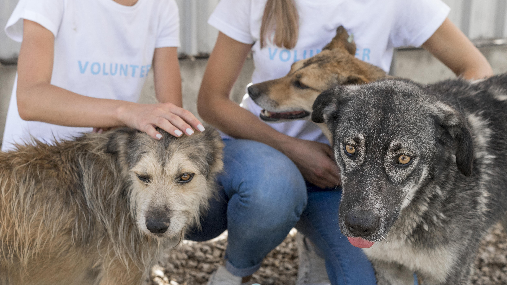
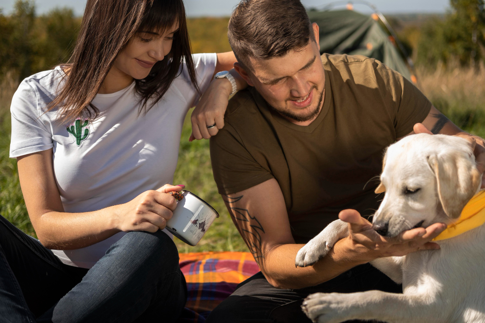

Resgates
Resgatamos animais em situação de risco e providenciamos cuidados veterinários.
Adoções
Processo cuidadoso para garantir um lar seguro e responsável.

Voluntariado
Oportunidades em abrigo, eventos e apoio à reabilitação.
Contato
Email: contato@bichocarinhoso.org.br
Telefone: (00) 99999-9999
Endereço: Rua das Flores, 123 — Rio de Janeiro